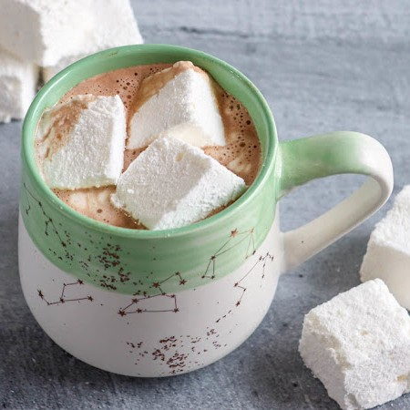

Home
Marshmallow Recipe

Description
These marshmallows are the real thing. Husbands love 'em, kids love 'em, picky eaters scramble for 'em. Better than store bought! Tastes great in hot cocoa.
Ingredients
- 1 cup confectioners' sugar for dusting
- 2 cups white sugar
- 1 tablespoon light corn syrup
- 1 ¼ cups water, divided
- 4 tablespoons unflavored gelatin
- 2 egg whites
- 1 teaspoon vanilla extract
Steps
- Dust a 9x9 inch square dish generously with confectioners' sugar.
- In a small saucepan over medium-high heat, stir together white sugar, corn syrup and 3/4 cup water. Heat to 250 to 265 degrees F (121 to 129 degrees C), or until a small amount of syrup dropped into cold water forms a rigid ball.
- While syrup is heating, place remaining water in a metal bowl and sprinkle gelatin over the surface. Place bowl over simmering water until gelatin has dissolved completely. Keep in a warm place until syrup has come to temperature. Remove syrup from heat and whisk gelatin mixture into hot syrup. Set aside.
- In a separate bowl, whip egg whites to soft peaks. Continue to beat, pouring syrup mixture into egg whites in a thin stream, until the egg whites are very stiff. Stir in vanilla. Spread evenly in prepared pan and let rest 8 hours or overnight before cutting.